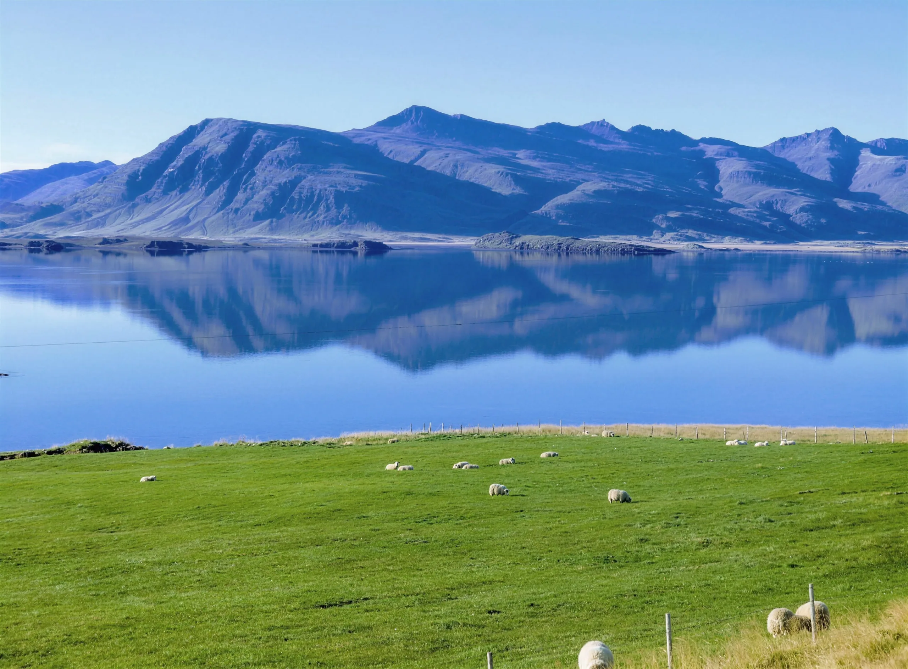
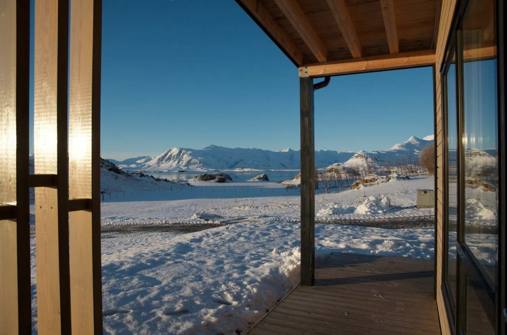
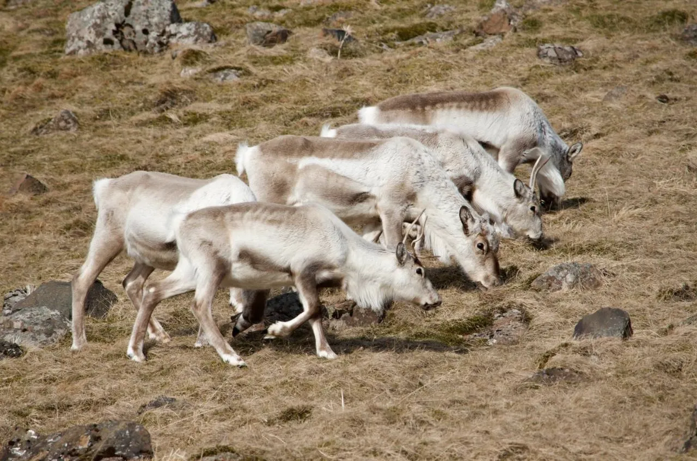
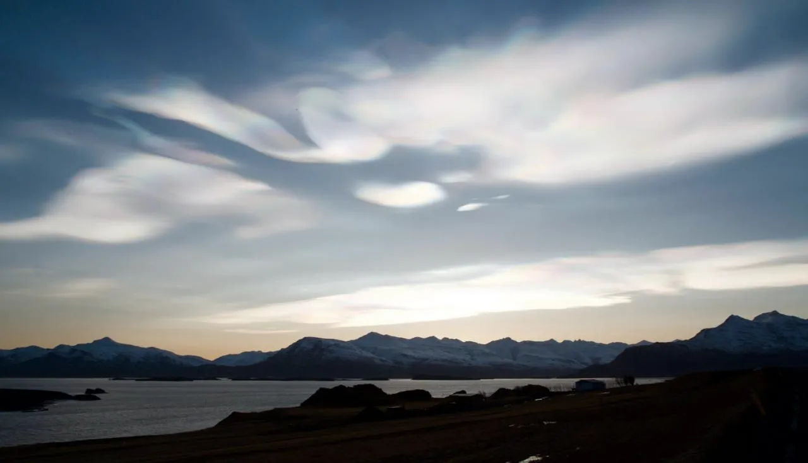
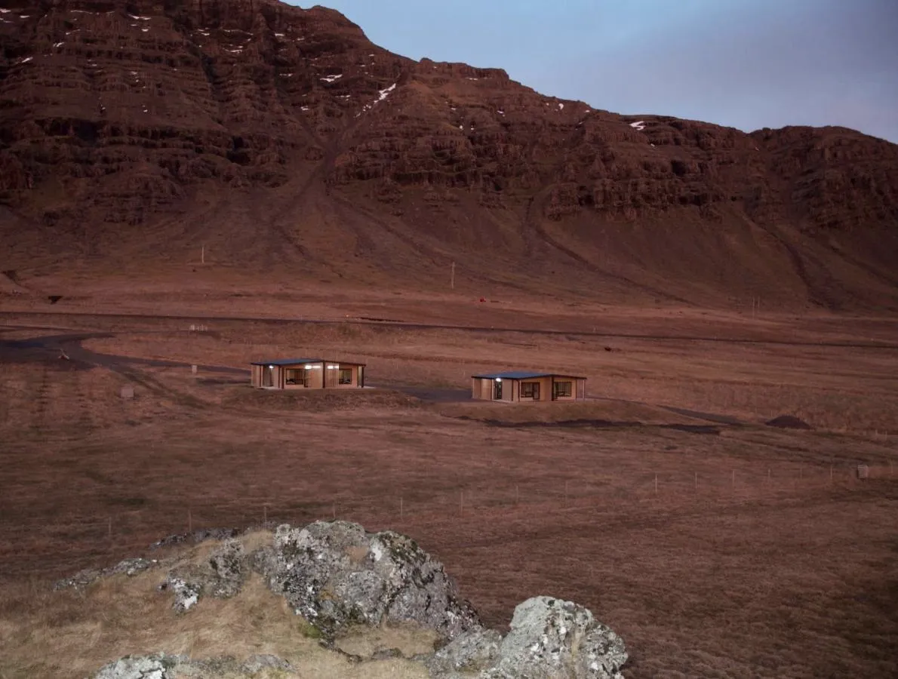

Krákhamar
Three ways to staySeven stays, two places, one fjord
- 9.6
- 4.93
The villa
- Size
- 109 m²
- Sleeps
- Six, in three bedrooms
- Booking.com from
- US$1,099 a night in July
Pick your dates

Álftafjörður means Swan Fjord
A shallow lagoon behind a sandbar, on the Ring Road between Höfn and Djúpivogur.




Hours of daylight
Hours of daylight, mid-month. Choose a month to open it in the calendar.
How far everything is
- DjúpivogurThe nearest town28 km30 min
- HöfnTown, and the airport at Hornafjörður76 km1 h 10
- EgilsstaðirOver the Öxi pass, a summer road. The coast road is longer111 km1 h 40
- JökulsárlónThe glacier lagoon135 km2 h
- ReykjavíkThe Ring Road along the south coast515 km7 h 30
- Keflavík AirportInternational flights553 km8 h
What guests ask
- Can you see the northern lights from the houses?
- Guests have watched them from their own porches. They need a clear, properly dark sky, and that darkness runs from late August to late April here. Nobody can promise them.
- How long is the day?
- From under four hours of sun in December to almost twenty two in June.
- How do we get there?
- By car on the Ring Road, about 515 km from Reykjavík along the south coast, or about seven and a half hours without stops. The nearest airport is Hornafjörður, about 75 km away.
- Is the road open in winter?
- The Ring Road is kept open, but storms can close it. Check road.is and vedur.is before setting off.
- Where can we eat?
- Every stay has its own kitchen. The closest restaurant is at Bragðavellir, 12 to 15 km away, and Langabúð in Djúpivogur has a museum café, 23 to 27 km away. Check opening hours outside summer.
- Who do we book with?
- With the hosts directly, here on this site. Card payment runs through Teya.
Caught the Northern Lights from our porch, was a mind blowing experience
Cindy, NetherlandsThe openness, the beauty all around. Just loved it.
Ness, GermanyVery comfortable and beautiful view through the picture window!
Theresa, United StatesBest place I’ve ever stayed in Iceland. Like someone’s luxury home.
Tania, Australia